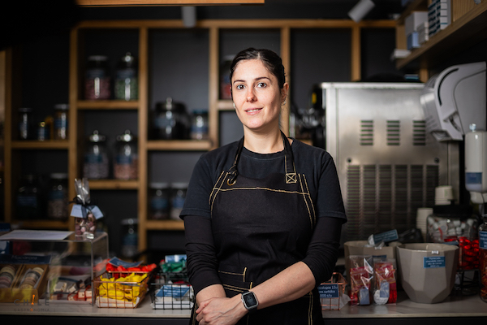

La pastelería chilena vive su momento más dulce
26 de Mayo
La chef chilena Camila Fiol, de 34 años, figura en la prestigiosa lista “50 Next Class of 2022″ de jóvenes promesas de gastronomía y el equipo La Roja Dulce, se coronó como mejor grupo pastelero de América, dos distinciones en menos de un mes que evidencian que la repostería chilena atraviesa su mejor momento.
Bajo la dirección de Camila García, con 28 años, el joven dúo de cocineros Javiera Villegas (26) y Alejandro Espinoza (28) ganó hace una semana la copa continental de pastelería, dejando atrás a grandes potencias como Estados Unidos o Argentina y logrando una plaza para el Mundial, que se celebrará en Lyon (Francia) en enero de 2023.“Chile nunca ha sido un país pastelero”, advirtió a Efe García, pero hace ya unos años que están “intentando dar la vuelta a esta creencia”.“Todo cambió hace poco, cuando los que estábamos empezando decidimos salir de Chile para formarnos. Aquí no había suficiente nivel”, agregó la chef, directora de “La Roja Dulce”, asociación gremial de pasteleros y fundadora de una de las mayores academias de repostería del país.
Para estos tres cocineros, sus experiencias en el extranjero han sido “vitales”: Alejandro trajo de México nuevas técnicas para tratar el chocolate, su especialidad; Javiera aprendió panadería en España con el gran maestro Paco Torreblanca, y Camila descubrió su pasión por enseñar cocina en Estados Unidos, Ucrania o Argentina. “Ha sido muy importante poder salir del país para encontrar más calidad profesional y sobre todo la tendencia gastronómica, que no estaba llegando a Chile”, explicó a Efe Espinoza. Que los pasteleros puedan formarse fuera ha servido también para “ampliar el catálogo de la pastelería nacional”, afirmó García, y a la tradicional hojarasca chilena o los típicos “dulces de La Ligua” se han sumado nuevos postres con otra denominación de origen, como los “croissant”, los malvaviscos o los “macarons” franceses.
Ahora, el equipo se prepara para encarar a Francia, Italia o Japón en la final mundial de este torneo, homólogo dulce del emblemático premio Bocuse d’Or de alta cocina, que en sus más de 30 años de historia nunca ha sido otorgado a un chef latinoamericano.
De la mezcla de sabores también sabe mucho Fiol, que el pasado junio fue incluida en la prestigiosa “50 Next Class of 2022″ del Basque Culinary Center, la lista anual de jóvenes promesas de la gastronomía presentada en la ciudad española de Bilbao. Galletas de vainilla con queso italiano, calugas (caramelos blandos) de tocino y mantequilla ahumada o pasteles con rica rica (un arbusto andino) son algunas de las propuestas de su atrevida dulcería, ubicada en el pintoresco barrio Italia, de Santiago. “Aquí tenemos muchos productos endémicos y nativos que, al mezclarlos con estas nuevas técnicas, nos permiten hacer cosas únicas en el mundo”, señaló a Efe. “Latinoamérica está creciendo cada vez más y la idea es hacer que nuestra gastronomía esté al nivel del resto del mundo”, agregó Fiol, profesora en el Cordon Bleu y antigua trabajadora del local chileno Boragó, que lleva años en la lista “The World's 50 Best Restaurants”.
A esta camada de chefs les abrió la puerta Gustavo Sáez, para muchos el gran maestro pastelero de Chile y el primero del país en clasificar para el mundial de Pastelería, en 2016.“Hoy en día hay un 'boom' dentro de la pastelería. En los últimos años, chefs muy jóvenes han ido marcando hitos en competencias internacionales y eso es porque talento en Chile sobra”, expresó a Efe Sáez, que hace cuatro años quedó sexto en el mundial. Este fenómeno, añadió, “tiene mucho que ver con la edad, porque la profesión y la competencia requiere de mucha energía, esfuerzo, pasión y un sacrificio personal muy fuerte”. Lo mismo opina Villegas: “Somos una generación muy emprendedora, que queremos ir más allá, perfeccionarnos, aprender y enseñar a futuras generaciones” -dijo- la idea es poder revolucionar la pastelería chilena”.